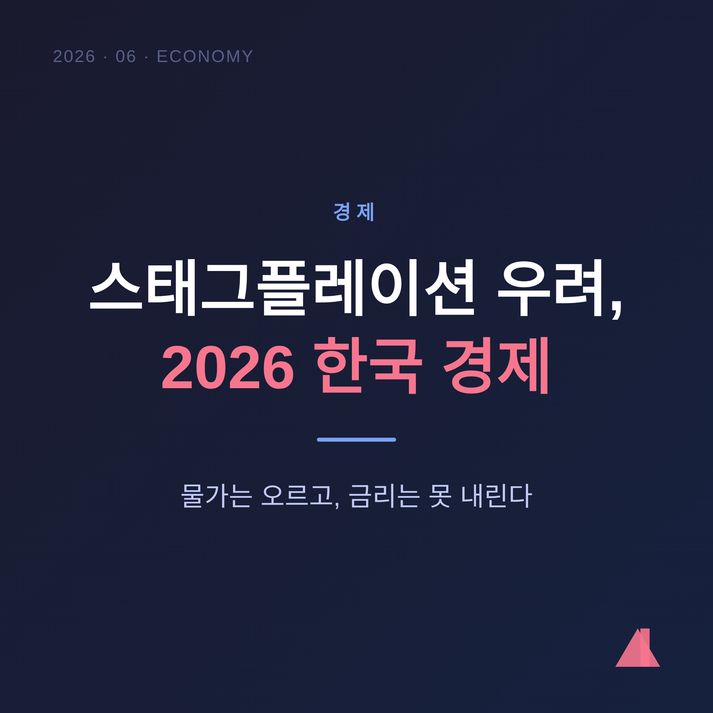
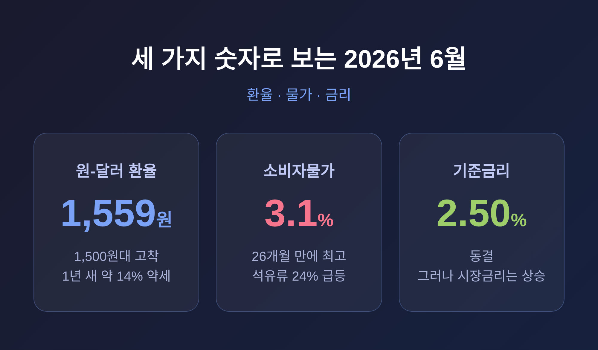
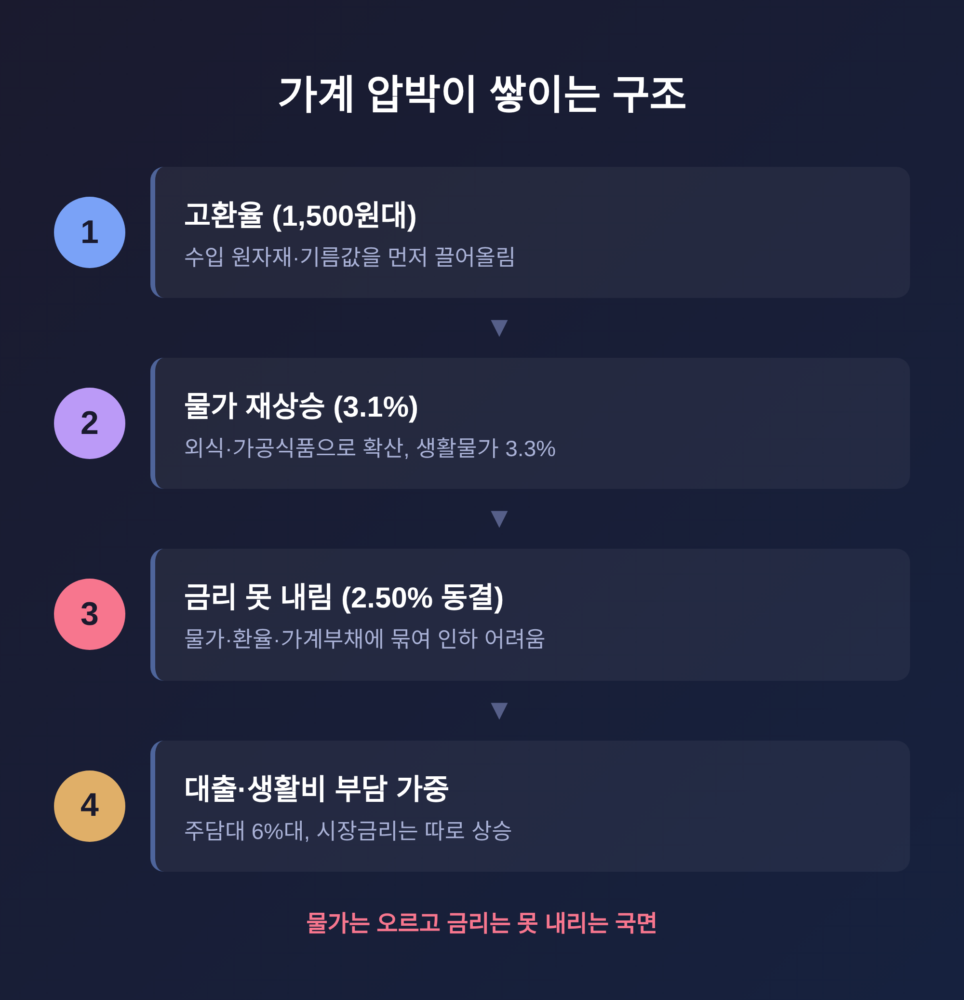
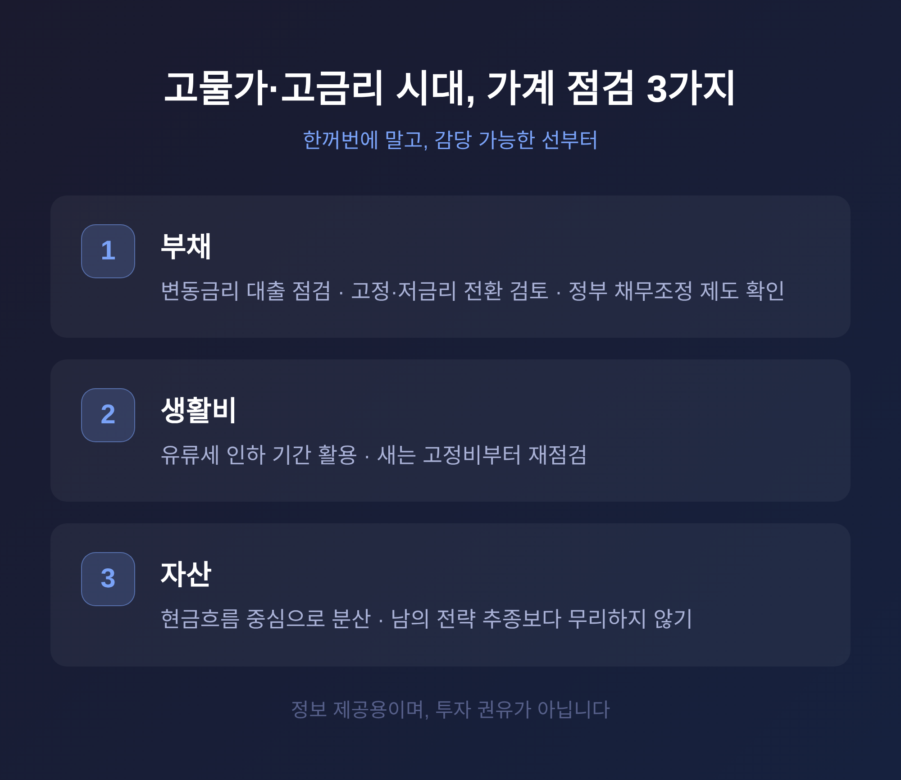

경제이번 글에서는 2026년 6월 현재의 한국 경제를 정리해 보겠습니다.
환율은 1,500원대에 머물고, 물가는 다시 3%대로 올라섰습니다. 그런데 금리는 쉽게 내리지 못합니다. '스태그플레이션'이라는 말이 다시 오르내리는 이유입니다.
먼저 세 줄로 요약하면 이렇습니다.
스태그플레이션은 경기침체를 뜻하는 '스태그네이션'과 물가상승을 뜻하는 '인플레이션'을 합친 말입니다.
쉽게 말하면, 경기는 식는데 물가는 오르는 상황입니다.
보통은 경기가 나빠지면 물가도 가라앉습니다. 그런데 둘이 같은 방향으로 가지 않을 때, 정책이 가장 어려워집니다. 물가를 잡으려 금리를 올리면 경기가 더 식고, 경기를 살리려 금리를 내리면 물가가 더 오르기 때문입니다.
2026년 한국 경제는 이 사이에 끼어 있습니다.
성장률부터 보겠습니다. 2025년 성장률은 약 1.0%였습니다. 2026년 전망치는 기관마다 1.7%에서 2.1% 사이입니다. 한국은행 1.8%, KDI 1.9%, OECD와 한국금융연구원은 2.1%로 봅니다.
회복은 하되, 완만합니다. 반도체 수출과 소비가 받쳐주지만, 미국의 관세 인상이 수출 증가세를 눌렀습니다.
여기에 고환율이 물가를 밀어 올렸습니다. 저성장과 물가상승이 겹친 셈입니다.
지금 상황은 숫자 세 개로 압축됩니다.

첫째, 환율입니다. 2026년 6월 5일 원-달러 환율은 장중 1,549원까지 올랐고, 종가는 1,559원대였습니다. 최근 1년 사이 원화는 약 14% 약세를 보였습니다.
흥미로운 점이 하나 있습니다. 한국의 경상수지는 흑자입니다. 2025년 6월까지 4개 분기 동안 GDP의 5.9%에 이르렀습니다. 미국 재무부조차 "지금 환율은 한국의 기초여건에 맞지 않는다"고 평가했습니다. 그럼에도 원화는 약합니다. 대외 요인이 그만큼 크다는 뜻입니다.
둘째, 물가입니다. 5월 소비자물가는 1년 전보다 3.1% 올랐습니다. 4월(2.6%)보다 0.5%p 높아졌습니다. 물가가 3%를 넘은 것은 2024년 3월 이후 처음입니다. 석유류가 24.2% 급등했고, 체감을 좌우하는 생활물가는 3.3% 올랐습니다.
셋째, 금리입니다. 한국은행 기준금리는 연 2.50%로 5월에 동결됐습니다. 6월에도 같은 기조입니다.
예전엔 경기가 식으면 금리를 내려 받쳐줬습니다. 지금은 그러지 못합니다.
이유는 세 가지가 맞물려 있습니다.
물가가 다시 올랐고, 환율이 높고, 가계부채가 무겁습니다.
금리를 빠르게 내리면 어떻게 될까요. 원화는 더 약해지고, 수입 물가는 더 오릅니다. 부동산이 다시 들썩일 수도 있습니다. 그래서 한국은행은 '인하보다 동결'에 무게를 두고 있습니다.
문제는 시장입니다. 기준금리는 멈춰 있어도 시장금리는 따로 움직입니다.
2026년 6월 채권시장 심리지표는 81.0으로, 한 달 만에 15.3포인트 떨어졌습니다. 미국 통화정책 불확실성과 국채금리 상승이 겹친 탓입니다. 실제로 올해 초 5대 은행 주택담보대출 금리는 연 6%대 상단에서 형성됐습니다.
정리하면 이렇습니다. 기준금리는 못 내리고, 대출금리는 오르고, 물가도 오릅니다. 가계가 받는 압박이 한 방향으로 쌓이는 구조입니다.

부동산도 같은 맥락입니다. 금리·대출한도·공급이라는 세 변수가 시장을 좌우합니다. 6%대 금리가 이어지는 동안, 수도권 핵심 입지와 지방·비핵심 자산의 격차는 더 벌어질 수 있습니다. 흔히 '초양극화'라 부릅니다.
다만 한 가지는 짚어두겠습니다. 이 흐름이 곧장 침체로 직결된다고 단정할 수는 없습니다. 수출과 소비가 버텨주는 한, 완만한 회복이라는 시나리오도 여전히 살아 있습니다.
이 글은 특정 상품을 권하는 글이 아닙니다. 무엇을 살펴볼 수 있는지, 정보로만 정리하겠습니다.

첫째, 부채입니다.
변동금리 대출이 있다면 금리 구조를 한 번 들여다보시길 권합니다. 고정금리·저금리 전환이나 채무 통합으로 이자 부담을 줄이는 방법이 거론됩니다. 상환이 버겁다면 정부의 채무조정·금융지원 제도를 먼저 확인해 보는 것이 좋겠습니다.
둘째, 생활비입니다.
고환율은 먼저 기름값과 수입 원자재를 건드리고, 이어 외식과 가공식품으로 번집니다. 실제로 라면은 8.2% 올랐고, 김밥 한 줄은 평균 3,700원이 됐습니다. 정부의 유류세 인하 연장이 유류비 부담을 일부 덜어주는 정도입니다. 새는 고정비부터 점검하는 편이 현실적입니다.
셋째, 자산입니다.
일부에서는 배당 ETF나 글로벌 채권형 상품처럼 '현금흐름 중심' 접근을 이야기합니다. 다만 이런 상품의 수익과 환차익은 늘 변하고, 손실 가능성도 있습니다. 남의 전략을 그대로 따르기보다, 본인 상황에 맞게 분산하고 무리하지 않는 것이 우선입니다.
세 가지 모두, 한꺼번에 바꾸기보다 감당 가능한 선부터 손대시면 좋겠습니다.
정리하면 이렇습니다.
지금 한국 경제는 물가는 오르는데 금리는 내리지 못하는, 운신의 폭이 좁은 국면에 있습니다. 환율·물가·금리가 한쪽으로 힘을 보태고 있어, 가계가 느끼는 무게는 지표보다 무겁습니다.
그래서 더더욱, 큰 베팅보다 작은 점검이 먼저입니다.
불확실한 시기일수록, 멀리 보는 사람이 결국 덜 흔들립니다.